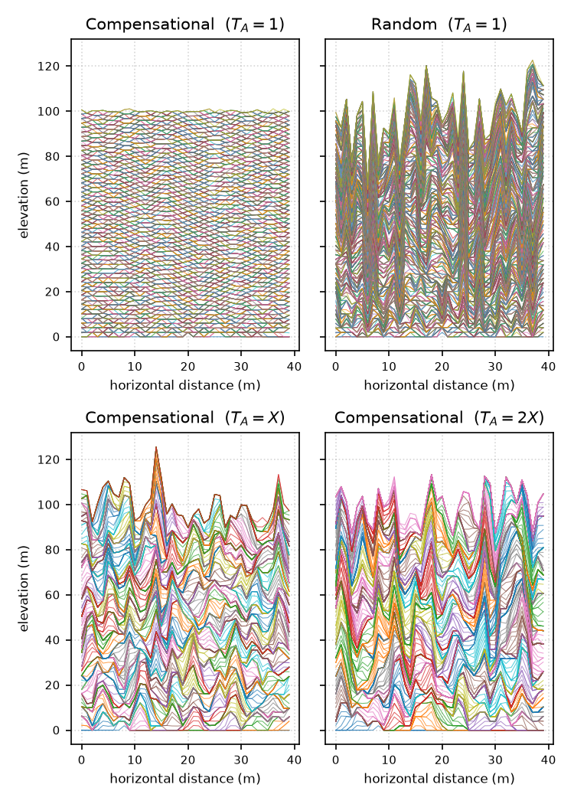

Bring your own tools
Contribute an output file and a little context. Any language, workflow, or software is welcome; the benchmarks are designed around results, not implementations.
An open field guide · geomorphology
A community-built collection of problems for exploring how geomorphology tools perform, compare, and see the landscape differently.
The collection
Each benchmark pairs a common geomorphic problem with openly described data and a place for methods to be understood side by side.
How it works
Contribute an output file and a little context. Any language, workflow, or software is welcome; the benchmarks are designed around results, not implementations.
Data with clear provenance ground each problem. The goal is to learn what different methods reveal—not to declare one universal winner.
Some problems lack a known answer, so methods are evaluated purely against each other. Others have a ground truth, allowing methods to be benchmarked for accuracy. Depending on the test's purpose, benchmarks rely on real-world, laboratory, model, or synthetic "toy" data.
01 · River morphology
How do automated methods identify and measure dunes across 370 bathymetric profiles?
Quartile range and median across detected bedforms
All detected bedforms pooled per method. Distribution summaries are descriptive, not an accuracy ranking.
Intercomparison, not ranking. There is no single authoritative bedform delineation for this dataset. Comparing distributions helps reveal how method choices affect the measured geometry.
02 · Delta landscapes
Trace the land-water boundary from a binary mask, then compare each shoreline with expert interpretations.
Land–water mask and submitted shoreline traces · Selenga River Delta, Lake Baikal
Loading benchmark raster and shoreline traces…
Reference scores and reported runtime
Scores show the mean across references when multiple references exist. Runtime is taken from submission metadata; methods without a reported runtime are omitted.
References are interpretations, not absolute ground truth. Differences among expert shorelines are part of the uncertainty that this benchmark makes visible.
03 · Stratigraphy
Given synthetic stratigraphic sequences, compute the compensation index κ and timescale T_c, then compare against theoretical expectations and across methods.
σ vs. T in log-log space · compensational and random stacking

σ(T) is the standard deviation of stratigraphic thickness sums over T depositional events. The transition from slope 0.5 (random walk) to slope κ marks T_c. Sequences generated by data/triangle_stacking_model.py.
Submitted κ · theoretical reference where available · timescale T_c
T_c · compensation timescale
Theoretical references, not empirical ground truth. κ reference values come from the literature (Straub et al., 2009). The two varied-avulsion-period datasets have no theoretical reference and are shown for cross-submission comparison only.